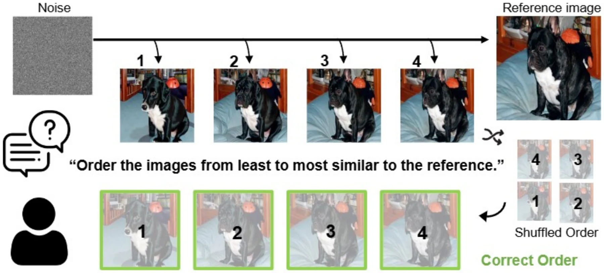
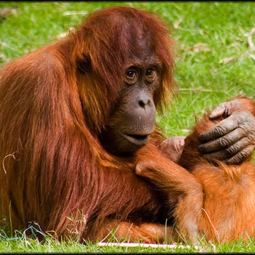
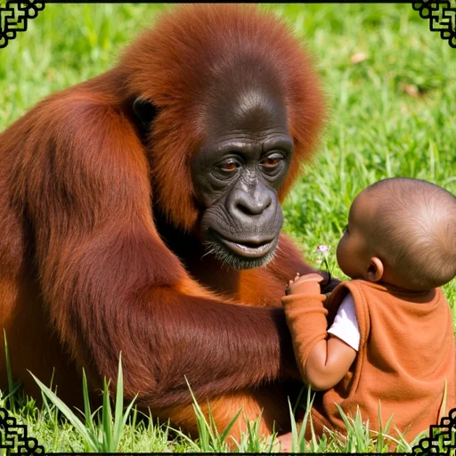
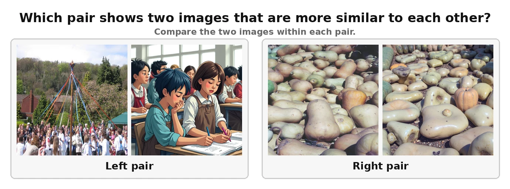
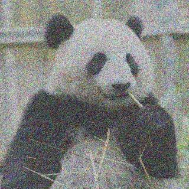
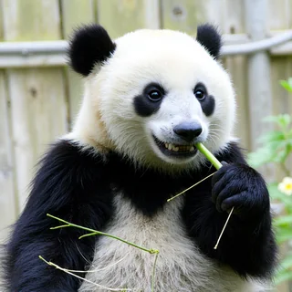
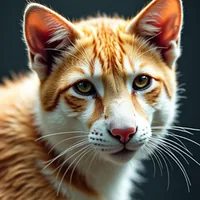
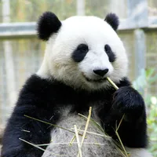
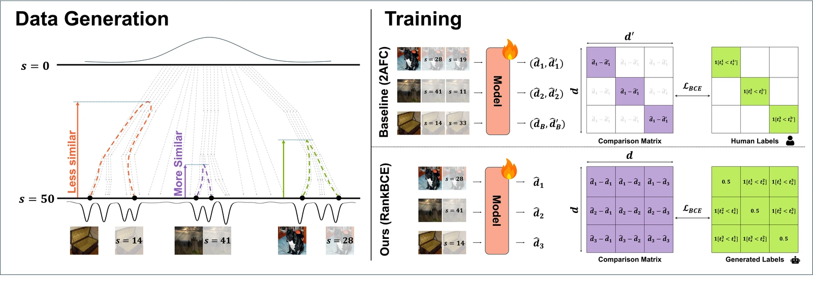
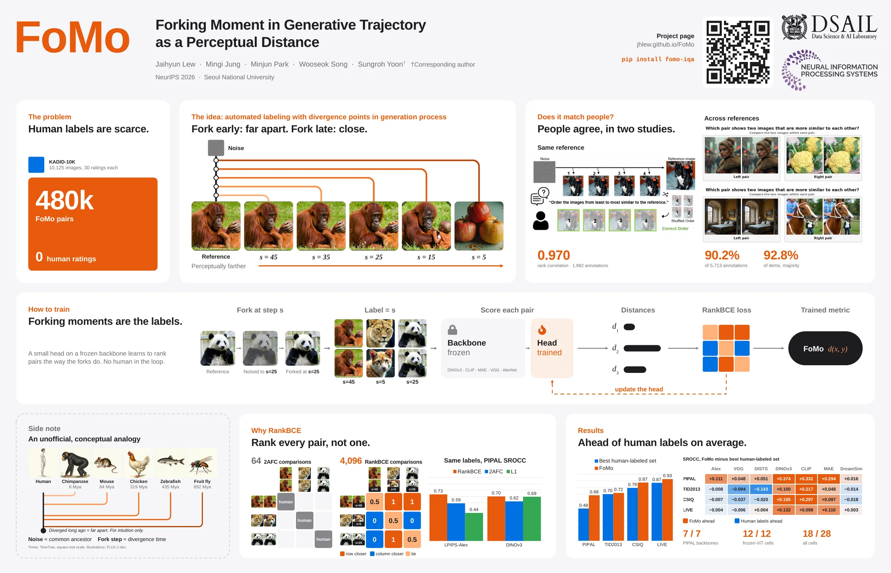

Study 1: same reference
Raters ordered forks of one reference from least to most similar to it.

0.970
rank correlation with the fork order, 1,982 annotationsNeurIPS 2026


Structure survives, content changes
The idea: automated labeling with divergence points in generation process
Perceptual metrics normally learn from people, and human labels are expensive, noisy and hard to compare across images. A diffusion model already builds images coarse-to-fine, so we use that order. Re-enter the trajectory at step s and generate again. Fork late and only fine detail changes. Fork early and only coarse structure survives. The forking step is the distance label.
We generated 480,000 labelled pairs with FLUX and no annotators. Because every pair carries its own label, any two pairs in a batch can be compared, so the model learns a global ranking and not only a choice within one reference.
Does it match people?
Raters ordered forks of one reference from least to most similar to it.

Raters chose which of two pairs, from different references, looked more alike.
Agreement (%) by gap between the two labels, in steps. The label is weakest exactly where people disagree with each other.
Tap the five images in order, from least to most similar to the reference. Tap a numbered image again to undo it.
Images come from the same FLUX pipeline as the study, not the original study set.

How to train
A small head on a frozen backbone learns to rank pairs the way the forks do. No human in the loop.



s=5
s=25The loss updates the head only; the backbone stays frozen.

Why RankBCE
A 2AFC label only says which of two variants of one reference is closer. Our labels are pointwise, so every pair can be compared with every other pair, even across references.
B labels, same reference only
B² labels, any two pairs
PIPAL SROCC. RankBCE is never beaten; on DINOv3 it matches L1 within seed variation.
Results
Each row trains the same seven models on a different dataset, so only the supervision changes. FoMo is the only row with no human labels. Scores are mean SROCC over 5 seeds, and higher is better.
| Trained on | Objective | LPIPS-Alex | LPIPS-VGG | DISTS | DINOv3 | CLIP | MAE | DreamSim† | Avg. |
|---|---|---|---|---|---|---|---|---|---|
| BAPPS | 2AFC | 0.622 | 0.634 | 0.489 | 0.287 | 0.151 | 0.338 | 0.760 | 0.469 |
| PieAPP | 2AFC | 0.602 | 0.635 | 0.564 | 0.325 | 0.258 | 0.294 | 0.711 | 0.484 |
| NIGHTS | 2AFC | 0.577 | 0.545 | −0.294 | 0.234 | 0.277 | 0.234 | 0.661 | 0.319 |
| KADID-10K | L1 | 0.577 | 0.590 | 0.518 | 0.298 | 0.312 | 0.253 | 0.617 | 0.452 |
| FoMo (ours) | RankBCE | 0.733 | 0.683 | 0.615 | 0.699 | 0.644 | 0.632 | 0.776 | 0.683 |
| Trained on | Objective | LPIPS-Alex | LPIPS-VGG | DISTS | DINOv3 | CLIP | MAE | DreamSim† | Avg. |
|---|---|---|---|---|---|---|---|---|---|
| BAPPS | 2AFC | 0.779 | 0.671 | 0.632 | 0.341 | 0.285 | 0.287 | 0.815 | 0.544 |
| PieAPP | 2AFC | 0.761 | 0.722 | 0.680 | 0.315 | 0.302 | 0.467 | 0.768 | 0.574 |
| NIGHTS | 2AFC | 0.779 | 0.653 | −0.497 | 0.230 | 0.294 | 0.358 | 0.760 | 0.368 |
| KADID-10K | L1 | 0.793 | 0.757 | 0.834 | 0.613 | 0.519 | 0.595 | 0.788 | 0.700 |
| FoMo (ours) | RankBCE | 0.785 | 0.663 | 0.691 | 0.713 | 0.736 | 0.643 | 0.801 | 0.719 |
| Trained on | Objective | LPIPS-Alex | LPIPS-VGG | DISTS | DINOv3 | CLIP | MAE | DreamSim† | Avg. |
|---|---|---|---|---|---|---|---|---|---|
| BAPPS | 2AFC | 0.943 | 0.887 | 0.855 | 0.411 | 0.427 | 0.455 | 0.912 | 0.699 |
| PieAPP | 2AFC | 0.936 | 0.896 | 0.821 | 0.331 | 0.514 | 0.587 | 0.904 | 0.713 |
| NIGHTS | 2AFC | 0.945 | 0.862 | −0.560 | 0.335 | 0.364 | 0.427 | 0.867 | 0.463 |
| KADID-10K | L1 | 0.935 | 0.895 | 0.938 | 0.616 | 0.604 | 0.698 | 0.874 | 0.794 |
| FoMo (ours) | RankBCE | 0.938 | 0.859 | 0.918 | 0.811 | 0.901 | 0.795 | 0.894 | 0.874 |
| Trained on | Objective | LPIPS-Alex | LPIPS-VGG | DISTS | DINOv3 | CLIP | MAE | DreamSim† | Avg. |
|---|---|---|---|---|---|---|---|---|---|
| BAPPS | 2AFC | 0.952 | 0.929 | 0.843 | 0.688 | 0.425 | 0.298 | 0.928 | 0.723 |
| PieAPP | 2AFC | 0.934 | 0.921 | 0.860 | 0.458 | 0.415 | 0.537 | 0.908 | 0.719 |
| NIGHTS | 2AFC | 0.949 | 0.919 | −0.774 | 0.439 | 0.560 | 0.376 | 0.874 | 0.478 |
| KADID-10K | L1 | 0.942 | 0.912 | 0.950 | 0.765 | 0.827 | 0.797 | 0.896 | 0.870 |
| FoMo (ours) | RankBCE | 0.948 | 0.923 | 0.954 | 0.897 | 0.925 | 0.907 | 0.931 | 0.926 |
Best in each column is highlighted. †Non-frozen backbone.
Get started
pip install fomo-iqa
import fomo
metric = fomo.FoMo('dinov3')
d = metric(img_ref, img_test) # lower = more similar
# as a perceptual loss
loss = metric(prediction, target, output='loss').mean()
loss.backward()Cite
@inproceedings{lew2026fomo,
title = {FoMo: Forking Moment in Generative
Trajectory as a Perceptual Distance},
author = {Lew, Jaihyun and Jung, Mingi and
Park, Minjun and Song, Wooseok and
Yoon, Sungroh},
booktitle = {Advances in Neural Information
Processing Systems},
year = {2026}
}